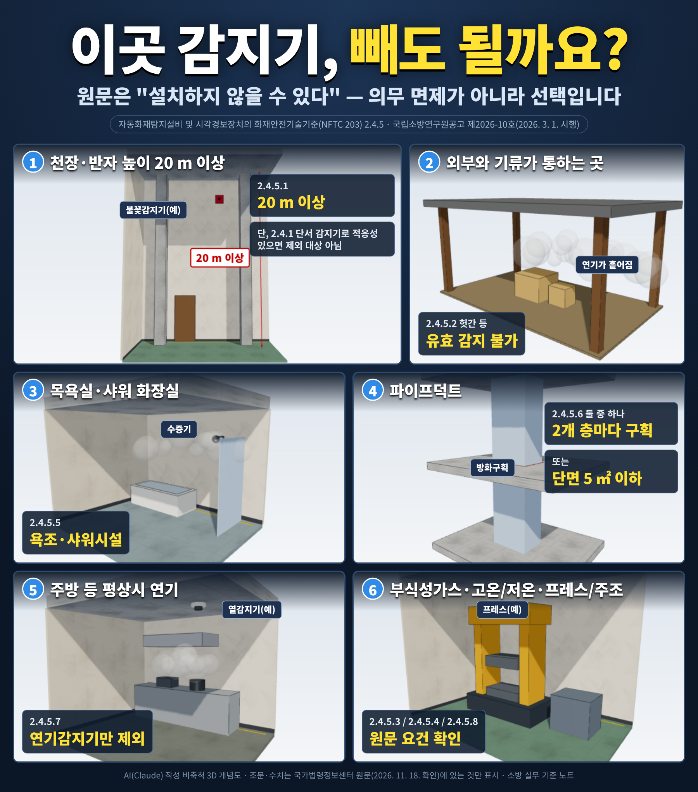
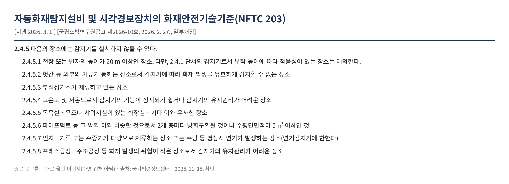
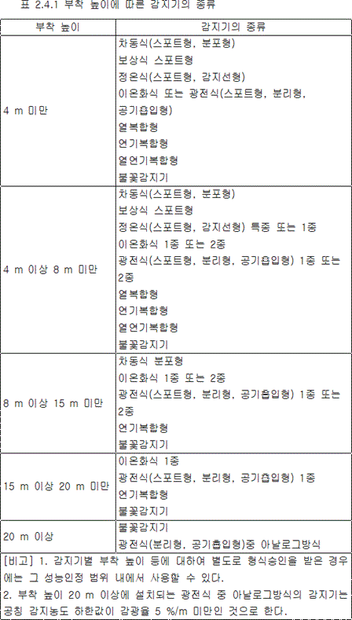
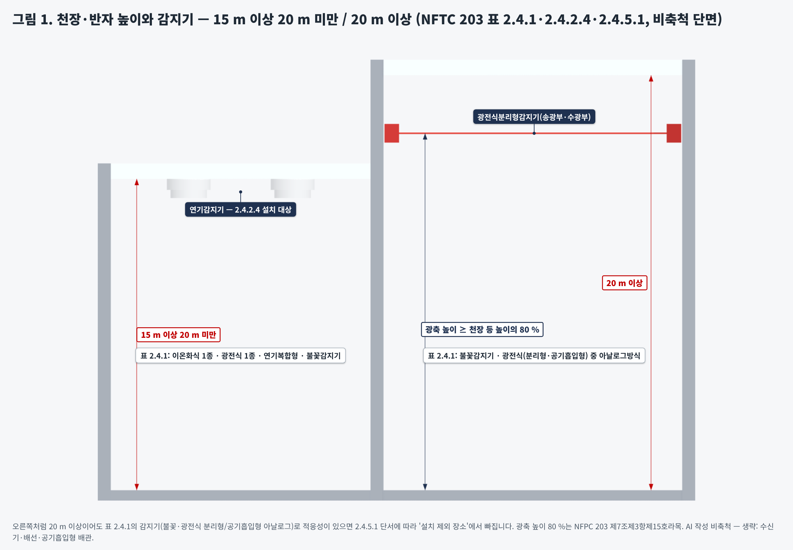

감지기를 안 다는 곳, 기준에 정해져 있습니다 — NFTC 203 2.4.5 감지기 설치 제외 장소
왜? 화재를 유효하게 감지할 수 없거나, 감지기 기능이 정지되기 쉽거나, 화재 위험이 적으면서 유지관리가 어려운 곳까지 감지기를 강제하지 않으려는 기준입니다(NFPC 203 제7조제5항).

1. 공식 기준 원문 (NFTC 203, 현행)
2.4.5 다음의 장소에는 감지기를 설치하지 않을 수 있다.
2.4.5.1 천장 또는 반자의 높이가 20 m 이상인 장소. 다만, 2.4.1 단서의 감지기로서 부착 높이에 따라 적응성이 있는 장소는 제외한다.
2.4.5.6 파이프덕트 등 그 밖의 이와 비슷한 것으로서 2개 층마다 방화구획된 것이나 수평단면적이 5 ㎡ 이하인 것
2.4.5.7 먼지ㆍ가루 또는 수증기가 다량으로 체류하는 장소 또는 주방 등 평상시 연기가 발생하는 장소(연기감지기에 한한다)
위 상자는 핵심 조항만 옮겼습니다. 2.4.5.1~2.4.5.8 전체는 아래 원문 이미지와 2절 표에 있습니다. 성능기준 「자동화재탐지설비 및 시각경보장치의 화재안전성능기준(NFPC 203)」(소방청고시 제2025-26호, 2026. 3. 1. 시행) 제7조제5항은 원문이 "화재발생을 유효하게 감지할 수 없는 장소 또는 감지기의 기능이 정지되기 쉽거나 화재발생의 위험이 적은 장소로서 감지기의 유지관리가 어려운 장소 등에는 감지기를 설치하지 않을 수 있다."이고, 구체적인 장소는 NFTC 203 2.4.5에 있습니다.
원문 이미지

표 2.4.1 부착 높이에 따른 감지기의 종류 (원문 표 이미지)

2. 적용 조건 — 장소별 정리
| 조항 | 원문 장소 | 볼 것 |
|---|---|---|
| 2.4.5.1 | 천장 또는 반자의 높이가 20 m 이상인 장소 | 단서: 2.4.1 단서의 감지기로서 부착 높이에 따라 적응성이 있는 장소는 제외 — 아래 ① |
| 2.4.5.2 | 헛간 등 외부와 기류가 통하는 장소 | "감지기에 따라 화재 발생을 유효하게 감지할 수 없는" 경우만 |
| 2.4.5.3 | 부식성가스가 체류하고 있는 장소 | "체류하고 있는" — 일시 발생이 아닌지 |
| 2.4.5.4 | 고온도 및 저온도로서 감지기 기능이 정지되기 쉽거나 유지관리가 어려운 장소 | 온도만이 아니라 기능 정지·유지관리 곤란 요건 |
| 2.4.5.5 | 목욕실·욕조나 샤워시설이 있는 화장실·기타 이와 유사한 장소 | 샤워시설 없는 일반 화장실은 원문 문구에 없음 |
| 2.4.5.6 | 파이프덕트 등으로서 2개 층마다 방화구획된 것이나 수평단면적 5 ㎡ 이하인 것 | 둘 중 하나 — 아래 ② |
| 2.4.5.7 | 먼지·가루·수증기가 다량으로 체류하는 장소, 주방 등 평상시 연기가 발생하는 장소 | 연기감지기에 한한다 — 아래 ③ |
| 2.4.5.8 | 프레스공장·주조공장 등 화재 발생 위험이 적은 장소로서 유지관리가 어려운 장소 | "위험이 적음"과 "유지관리 곤란"을 함께 |
① 20 m 이상과 단서. 표 2.4.1에서 부착 높이 20 m 이상에 적응하는 감지기는 원문상 "불꽃감지기, 광전식(분리형, 공기흡입형)중 아날로그방식"입니다. 2.4.5.1 단서는 2.4.1 단서의 감지기(불꽃감지기·광전식분리형감지기·아날로그방식의 감지기 등 8종)로서 부착 높이에 따라 적응성이 있는 장소를 제외한다고 씁니다. 그래서 "20 m 이상이면 무조건 생략"으로 읽기보다, 그 높이에 맞는 감지기가 있으면 설치 제외 장소에서 빠진다고 보는 쪽이 원문 문구에 가깝습니다(의견). 표 2.4.1 비고 2는 20 m 이상에 설치되는 광전식 중 아날로그방식은 "공칭 감지농도 하한값이 감광율 5 %/m 미만인 것"으로 정합니다.
② 파이프덕트는 '구획' 또는 '면적'. 2.4.2.3은 엘리베이터 승강로·린넨슈트·파이프 피트 및 덕트 등에 연기감지기를 설치하도록 정합니다. 그중 2개 층마다 방화구획되었거나 수평단면적이 5 ㎡ 이하인 것은 2.4.5.6에 따라 설치하지 않을 수 있습니다. 단면적을 어디(구획 벽 안쪽 등)로 재는지는 원문에 따로 없습니다.
③ 주방은 '연기감지기만'. 2.4.5.7 괄호 문구는 연기감지기에 한합니다. 열감지기 등 다른 감지기까지 빼도 된다는 문구는 없습니다. 2.4.3.4는 정온식감지기를 주방·보일러실 등 다량의 화기를 취급하는 장소에 공칭작동온도가 최고주위온도보다 20 ℃ 이상 높은 것으로 설치하도록 정합니다.
3. 그림으로 보기

그림은 AI(Claude)로 그린 비축척 개념도입니다. 두 실의 높이 차이와 감지기 크기는 비교용으로 과장했고, 감지기 개수·위치는 예시입니다. 광축 높이 80 %는 NFPC 203 제7조제3항제15호라목("광축의 높이는 천장 등 높이의 80퍼센트 이상일 것")입니다. 설치 적합 판정용 도면이 아닙니다.
판단 기준점 주의: "천장 또는 반자의 높이"는 감지기 부착면 높이로 보는 것이 일반적 해석이지만, 경사 천장·단차가 있는 아트리움에서 어느 점을 재는지는 원문에 따로 없습니다. "기타 이와 유사한 장소", "다량으로 체류"의 범위도 해석이 갈릴 수 있으니 관할 소방서에 먼저 확인하세요.
4. 단계별 확인사항
| 단계 | 확인할 것 |
|---|---|
| 설계 | 제외 장소마다 해당 조항(2.4.5.x)을 평면도·계통도에 표기. 20 m 이상 공간은 표 2.4.1 감지기(불꽃·광전식 분리형/공기흡입형 아날로그) 적용 검토 결과를 남김. 파이프덕트는 방화구획 층 간격 또는 수평단면적 산정 근거. 주방은 연기감지기 대신 둘 감지기 종류와 공칭작동온도 |
| 시공 | 샤프트 방화구획이 설계대로 2개 층마다 시공됐는지(관통부 마감 포함). 반자 높이 변경으로 20 m 기준이 바뀌지 않았는지 |
| 감리 | 2.4.5.2·2.4.5.4·2.4.5.8은 조건(유효 감지 불가, 기능 정지·유지관리 곤란, 화재 위험 적음)이 모두 맞는지 현장 확인. 화장실은 샤워시설·욕조 유무 |
| 유지관리·점검 | 용도 변경(샤워실 철거, 헛간 벽 설치로 밀폐, 주방 폐쇄 등)으로 제외 근거가 사라졌는지. 샤프트 구획 훼손 여부 |
5. 적용 시점과 경과조치(연혁 대조)
현행본: 국립소방연구원공고 제2026-10호(2026. 2. 27. 발령, 2026. 3. 1. 시행).
연혁 대조: 국가법령정보센터 연혁 목록의 3개 판본 — 제정본(소방청공고 제2022-224호, 2022. 12. 1. 시행), 국립소방연구원공고 제2024-59호(2024. 11. 25. 발령), 현행본 — 의 2.4.5(2.4.5.1~2.4.5.8)를 대조했습니다. 세 판본 모두 문구가 같습니다. 즉 NFTC 203 체계가 시작된 2022. 12. 1.부터 이 조항은 바뀌지 않았고, 따로 볼 경과조치가 없습니다. NFTC 이전의 「자동화재탐지설비 및 시각경보장치의 화재안전기준(NFSC 203)」 시절 문구와 표 2.4.1의 판본별 변경 여부는 이번에 대조하지 않았습니다.
공식 원문 링크
· 자동화재탐지설비 및 시각경보장치의 화재안전기술기준(NFTC 203) 현행 — 국립소방연구원공고 제2026-10호
· NFTC 203 — 국립소방연구원공고 제2024-59호
· NFTC 203 제정본 — 소방청공고 제2022-224호(2022. 12. 1. 시행)
· 자동화재탐지설비 및 시각경보장치의 화재안전성능기준(NFPC 203) 현행 — 제7조제5항
2026. 11. 18. 국가법령정보센터 원문 기준으로 작성했습니다. 기준은 개정될 수 있으니 적용 시점의 원문을 확인하세요.